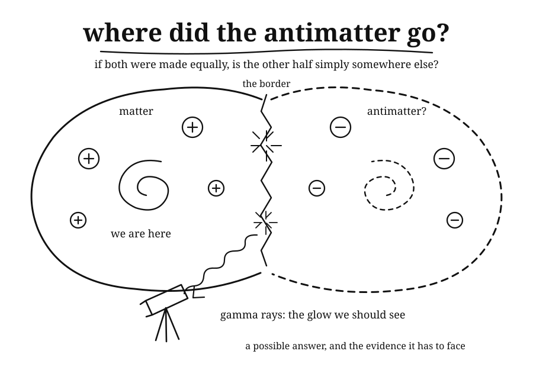

Musings · A plain-language research note
Where did the antimatter go?
The early universe should have destroyed almost all of its matter. It did not. What if the antimatter never went missing, and is only somewhere else?

The puzzle
Every kind of matter particle has a mirror twin, an antiparticle, with the opposite charge. When a proton meets an antiproton, both are destroyed and their mass turns into lighter particles and radiation. This is called annihilation.
In its first fraction of a second the universe was hot enough to keep making particle and antiparticle pairs. As far as well-tested physics tells us, the two are made together in equal amounts. As the universe cooled they should have wiped each other out, leaving light and almost nothing else.
Yet we are here. There are about 6 protons and neutrons for every 10 billion particles of light, and no sign of a matching amount of antimatter. Most physicists think some not-yet-discovered process made slightly more matter than antimatter. Several have been proposed. None has been confirmed.
The idea I wanted to test
Perhaps there never was an excess. Equal amounts annihilated wherever they met, some regions were left with matter and others with antimatter, and we live in a matter region.
This is not my idea or a new one. Roland Omnès proposed a version in 1969, and Floyd Stecker and others developed it. The weight of published evidence is against it. My aim is to test it openly, and to write down what counts as failure before running anything.
Could luck be enough?
The first question is whether random unevenness, with no new physics, leaves enough survivors. A simple calculation with even mixing says no: it gives one to three billion times too little matter. Something would have had to push matter and antimatter apart, within about the first thousandth of a second.
The test that matters
If both kinds of region exist, they should touch somewhere. Annihilation along the border would produce gamma rays, which would still reach us as a faint glow across the sky. In 1998 Andrew Cohen, Álvaro De Rújula and Sheldon Glashow calculated that glow. They concluded it would be too bright to match observations unless our matter region is about as large as the visible universe.
Their calculation used the picture of the universe accepted then. Before redoing it with current numbers, we had to show that we could reproduce theirs.
What happened
Given their published annihilation rate, our calculation of the glow agreed with theirs within the margin set in advance, in one case only narrowly. Computing the rate ourselves did not. At two of seven moments in cosmic history our rate fell outside the margin.
| Check | Allowed | Result |
|---|---|---|
| Glow from their rate | 0.67–1.5 × published | 0.69–0.94: passed |
| Rate computed by us | 0.67–1.5 × published | 0.52–1.01: failed |
Changing our assumptions one at a time did not close the gap. A simplified calculation by a separate route hints that the published rate may be somewhat high in part of its range. It does not prove it. No outside expert has checked this, and the mistake could still be ours.
Where this stands: the puzzle is not solved, and nothing here overturns the 1998 conclusion. We have not yet redone the calculation with current numbers or compared our results with telescope data.
What comes next
The gap has to be understood first, ideally with help from someone who works on cosmology or fluid dynamics. Only then does it make sense to update the calculation. I expect current numbers to make the predicted glow brighter, which would count further against the idea. That is an expectation, not a result.
Explore the work: Longer explainer with the chart · Code and pass/fail rules · The 1998 study
The code and analysis were produced with help from an AI system (Claude). This is an exploratory project, not a peer-reviewed result. Status as of November 2026.
← Back to musings